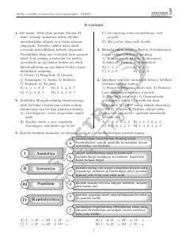

MSMilliy sertifikat imtihonlari uchun tarix fanidan namunaviy testlar to'plami.
Ushbu qo'llanma milliy sertifikat imtihonlariga tayyorgarlik ko'rayotgan abituriyentlar uchun mo'ljallangan namunaviy test topshiriqlarini o'z ichiga oladi. Kitobda jahon va O'zbekiston tarixi bo'yicha turli davrlarga oid savollar va ularning tahlillari keltirilgan.